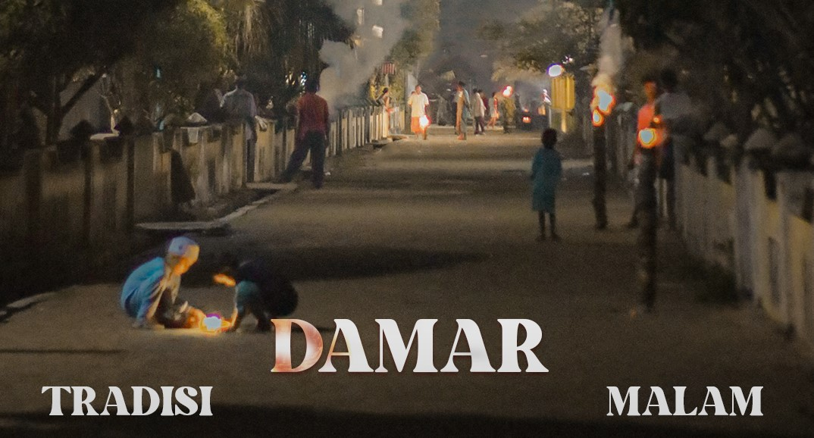
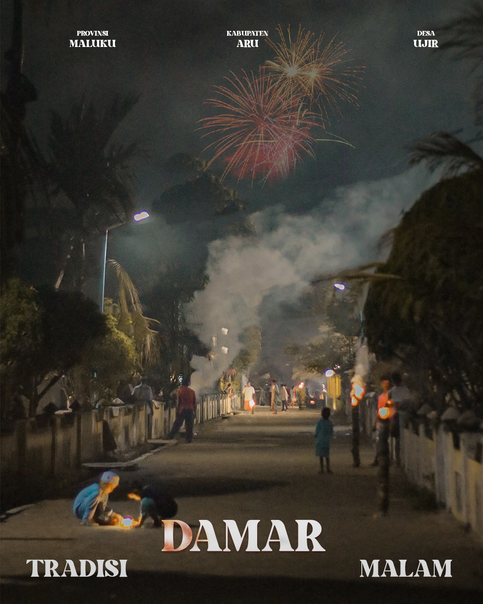
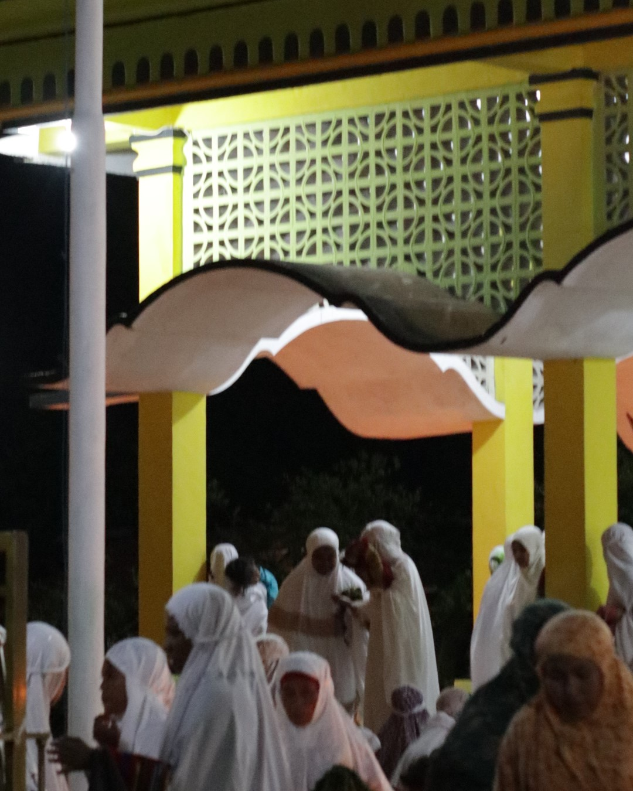

BERITA


Artikel Terkini
Profil Desa Ujir
Administrator ArtikelReruntuhan kampung lama Ujir yang paling mengesankan adalah yang disebut oleh masyarakat Ujir sebagai masjid lama. Di masa itu masjid ini merupakan bangunan yang mempesona, yang juga dipuji-puji oleh para pengunjung yang berturut-turut datang ke Ujir. ...
Sejarah Desa Ujir
Administrator ArtikelDesa Ujir adalah salah satu Desa dengan pemeluk Agama Islam tertua di Kabupaten Kepulauan Aru ...